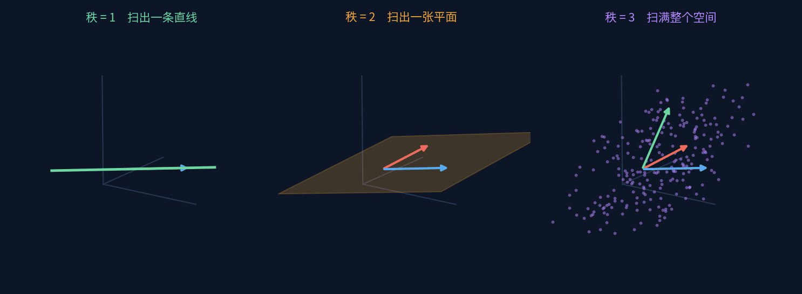
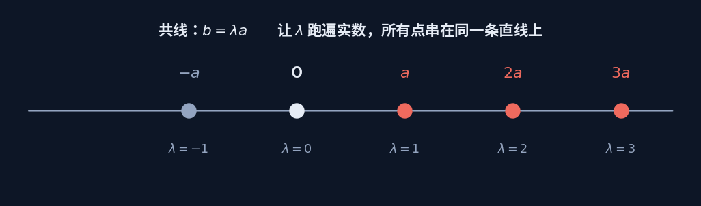
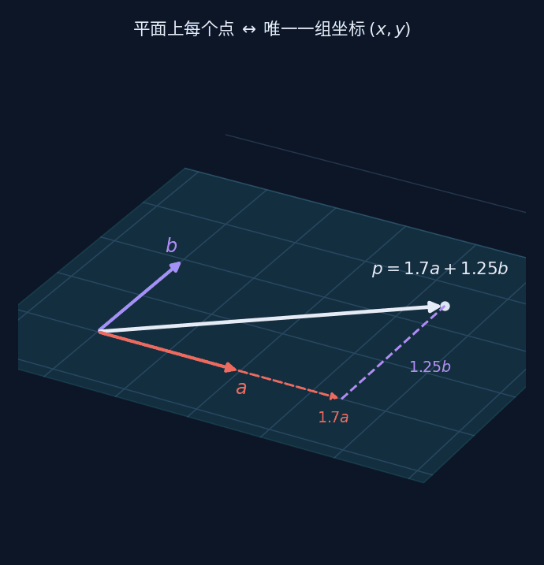
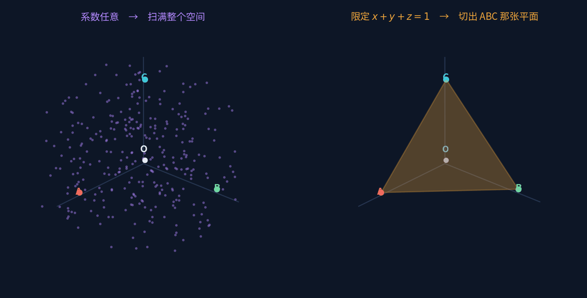
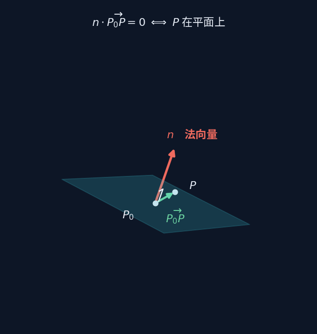
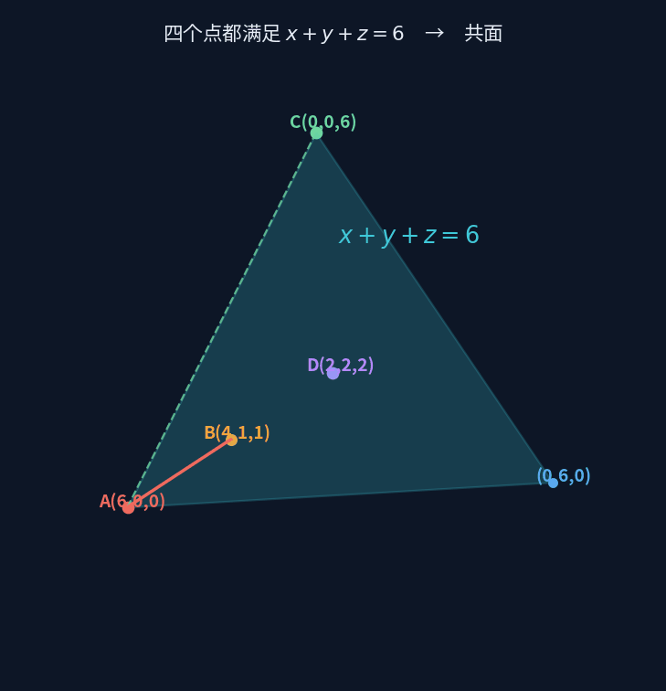
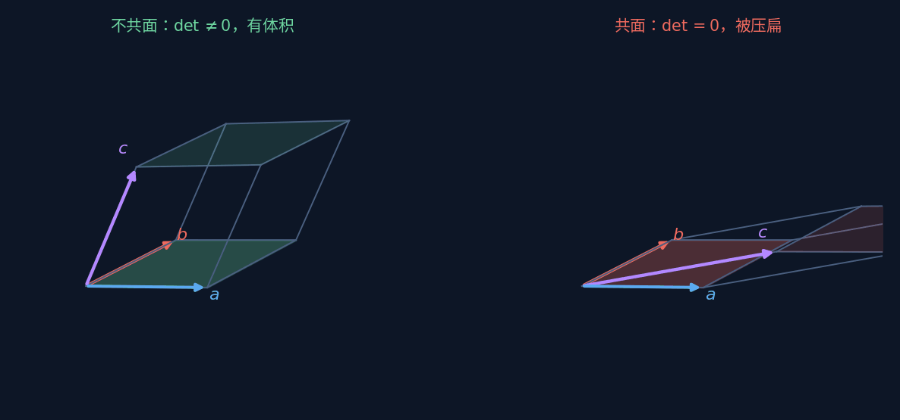
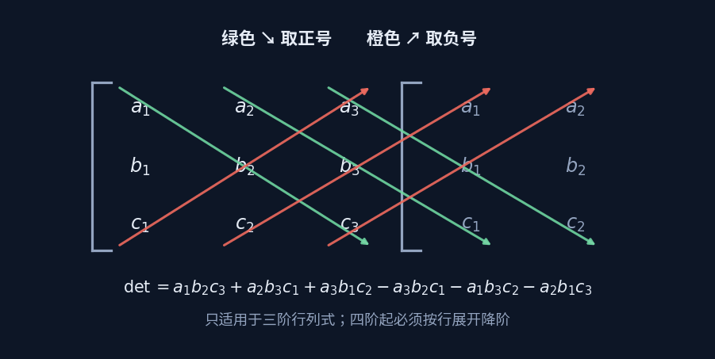

从"四点共面"走进线性代数
一道高中题，一路走到秩、张成与行列式
主线例题：判断 $A(6,0,0)$、$B(4,1,1)$、$C(0,0,6)$、$D(2,2,2)$ 是否共面
先回答一个问题：这算线性代数吗
算，而且是最核心的那一块。你在高中学的"空间向量"，本质上就是线性代数在 $n=3$ 时的具体版本。 教材为了照顾直观用了一套几何化的说法，大学换一套抽象术语，讲的是同一件事。
| 高中的说法 | 线性代数的说法 | 本质 |
|---|---|---|
| $\vec b=\lambda\vec a$，两向量共线 | $\vec a,\vec b$ 线性相关 | 秩为 1 |
| $\vec p=x\vec a+y\vec b$，三向量共面 | $\vec p$ 在 $\vec a,\vec b$ 张成的子空间里 | 秩为 2 |
| 空间向量基本定理 | $\{\vec a,\vec b,\vec c\}$ 构成 $\mathbb R^3$ 的一组基 | 秩为 3 |
| $x\vec a+y\vec b+z\vec c$ | 线性组合 | — |
| 判断共面（凑系数） | 算行列式是否为 0 / 求秩 | 同一判据 |
| 数量积 $\vec a\cdot\vec b$ | 内积，可写成 $\mathbf a^{\mathsf T}\mathbf b$ | — |
| 法向量 $\vec n$ | 平面的正交补 | — |
线性代数不是新知识，是把你已经会的东西换成可以推广到 $n$ 维的语言。
所以这道题用大学的话说就是：判断三个向量的秩是否小于 3。 高中不教"秩"和"行列式"，只能靠手工凑系数——这就是为什么同一道题高中做起来绕，大学做起来一行。
起点：线性组合能扫出什么
给定几个向量，各乘一个数再加起来，得到的新向量叫线性组合：
系数可以取任意实数。整个线性代数说到底就在研究一件事： 固定几个向量，让系数跑遍所有实数，能"扫"出什么形状？

扫出来的东西叫张成空间（span），它的维数就是这组向量的秩。 于是三个几何概念被统一了：
秩 = 1 → 扫出直线 → 这些向量共线
秩 = 2 → 扫出平面 → 这些向量共面
秩 = 3 → 扫出整个空间 → 不共面，构成一组基
共面问题就是秩的问题。这是全篇第一个关键句。


为什么会冒出"系数和 = 1"
判断四点共面时，课本常常要求系数满足 $x+y+z=1$。这个条件从哪来？

区别在于过不过原点
$x\vec a+y\vec b+z\vec c$ 系数任意时，扫出的是过原点的整个空间（或子空间）。 但四点共面问的是"D 在不在 A、B、C 决定的那张平面上"——那张平面一般不过原点。
补上 $x+y+z=1$，组合就从线性组合变成了仿射组合： 它扫出的不再是过原点的子空间，而是恰好穿过那三个点的平面。 那个"1"，就是把子空间平移到位的通行证。
这和拟合板块里"通解 = 特解 + 齐次解"是同一个结构： 齐次解负责在平面里滑动，特解负责把整张平面挪到该在的位置。
换条路：用坐标和法向量
除了凑系数，还可以正面写出那张平面的方程。

法向量垂直于平面内任何向量，而两个非零向量垂直的充要条件是点积为零。展开就得到一般式：
顺带回答：为什么它的解一定构成一张平面
三维空间有 3 个自由度，一个线性约束消掉 1 个，剩下 2 个——几何上正好是一张二维曲面。 又因为方程是一次的、没有弯曲项，这张曲面就是平的。所以是平面，不是曲面。

第三条路：行列式
最省事的做法，是把"共面"直接变成一次计算。


行列式的绝对值就是相应维度下的"体积"：二阶是面积，三阶是体积，四阶是四维超体积。
更高阶不能用对角线法则，要按行展开降阶——$4\times4$ 拆成 4 个 $3\times3$，再拆成 $2\times2$。
展开见 → 向量与空间
三种解法，一道题
| 解法 | 怎么做 | 适合谁 |
|---|---|---|
| 观察法 | 凑系数：找 $x,y,z$ 使 $\overrightarrow{AD}=x\overrightarrow{AB}+y\overrightarrow{AC}$ | 高中，最快，但要靠眼力 |
| 坐标代入法 | 先求平面方程，再把第四点代进去验 | 稳妥，步骤明确，不用碰运气 |
| 行列式法 | 三个向量排成矩阵，算 $\det$ 是否为 0 | 大学标准做法，一行出结果 |
三种解法不是三件事——它们是同一个判据的三种写法。 凑得出系数 $\iff$ 落在张成空间里 $\iff$ 秩小于 3 $\iff$ 行列式为零。 高中做题选第一种是因为工具有限，不是因为它更本质。
术语速查
| 术语 | 一句话 | 在这道题里 |
|---|---|---|
| 线性组合 | 各乘一个数再加起来 | $x\overrightarrow{AB}+y\overrightarrow{AC}$ |
| 张成空间 span | 所有线性组合扫出的形状 | $A,B,C$ 决定的那张平面 |
| 秩 rank | 张成空间的维数 | 本题是 2，所以共面 |
| 线性相关 | 有一个向量是多余的 | $\overrightarrow{AD}$ 能被另两个表示 |
| 基 basis | 不多不少、刚好撑满的一组向量 | 本题三向量不构成基 |
| 仿射组合 | 系数和为 1 的线性组合 | 把子空间平移到不过原点的位置 |
| 正交补 | 与整个子空间垂直的那些方向 | 平面的法向量 $\vec n$ |
往前一步
这道题走完，你其实已经用过了矩阵板块的全部核心词：张成、秩、线性相关、基。 下一步只是把它们从"三个向量"推广到"任意多个向量、任意维空间"—— 名字不变，图景不变，只是数字从 3 换成 $n$。
完整讲义
页面上是主线。完整版含逐步推导、三种解法的完整演算、练习与答案， 八张配图全部内嵌，Markdown 格式，可直接打开或打印。
请输入友情码
Enter the friendship code
线索：首页那句话是谁说的？填他的姓，拼音或英文都行。
Hint: who said the line on the homepage? His surname will do.
不对，再想想 Not quite — try again